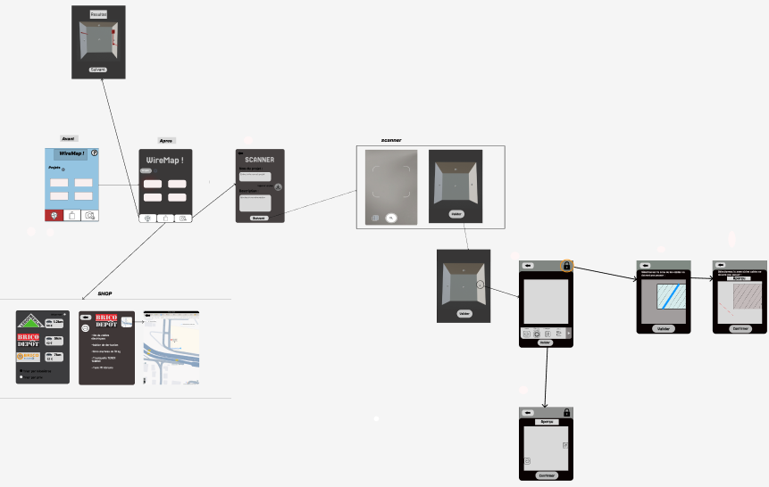
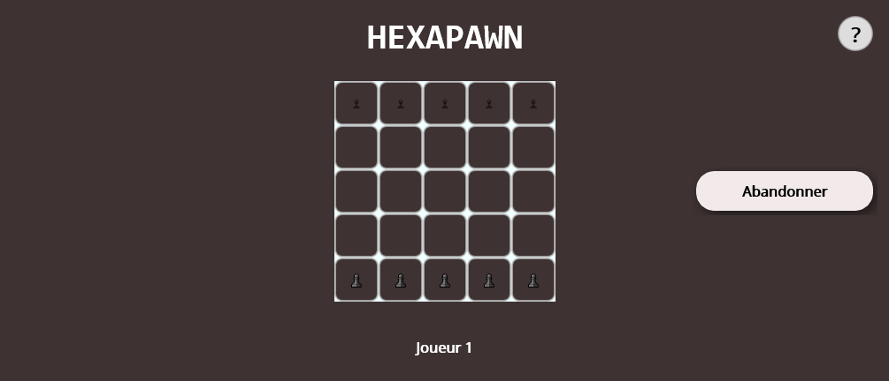
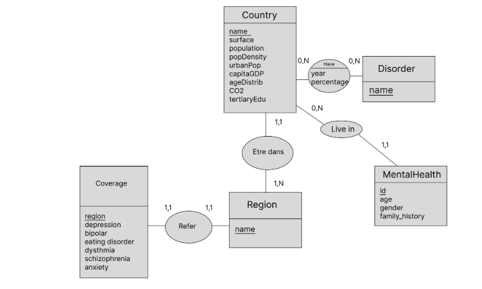

Dans cette page, je vais vous parler de différents projets que j'ai fait lors de mon BUT informatique qui m'ont fait travailler différentes compétences qu'on y apprends: C1-Développer des applications informatiques simples, C2- Appréhender et construire des algorithmes, C3-Installer et configurer un poste de travail, C4-Concevoir et mettre en place une base de données à partir d'un cahier des charges client, C5- Identifier les besoins métiers des clients et des utilisateurs, et C6-Identifier ses aptitudes pour travailler dans une équipe.

Intitulé: SAE de recueil de besoin
Contexte: Nous étions une équipe de 4 et devions rendre le projet en 2 mois
Objectif: Chaque groupe avait un enseignant attitré qui avait un besoin. Nous avions droit à deux
réunions pour communiquer avec le professeur, comprendre son besoin et qu'il voit si l'avancé du projet correspond à ses attentes. Nous devions lui rendre la maquette d'une application mobile qui répondrait à ses besoins.
Travail réalisé: Nous avons commencé par préparer les questions afin de mieux cerner son besoin. Celui-ci était une application lui permettant de mieux savoir où faire passer les câbles électriques dans les murs pour minimiser le coût en fonction de ce qu'il comptait installer. Cette application devait aussi lui indiquer quel
magasin pourrait lui permettre d'acheter le matériel au moindre coût. Nous nous sommes ensuite organisé avec chacun différentes tâches pour arriver à répondre au mieux à son besoin dans la limite de temps. Cette SAE nous a fait travailler les compétences C5 et C6.
Résultat: Au final, nous avons eu une note de 13,5 lorsque la moyenne était à 11,5

Intitulé: SAE de développement d'application IHM
Contexte: Nous étions une équipe de 3 et devions rendre le projet en 3 mois
Objectif: Les professeurs nous avaient montré différents jeu, nous devions en choisir un et le but était de le coder.
Travail réalisé: Nous avions différents jalons: pour rendre les définitions de l'application, pour rendre l'application console, rendre la documentation, rendre l'application finale, faire un oral et rendre une vidéo de présentation. Malgré une procrastination présente chez mes coéquipiers, j'ai réussi à les motiver pour travailler et nous avons rendu une application fonctionelle aux enseignants. Cette SAE nous a fait travailler les compétences C1, C2, C5, et C6.
Résultat: Au final, nous avons rendu une application contenant les fonctionnalités qui ont été demandés.

Intitulé: Exploitation d'une base de données
Contexte: Nous étions une équipe de 4 et devions rendre le projet en 3 mois
Objectif: Les professeurs nous avaient demandé de chercher un ou plusieurs jeu de données de notre choix, d'en faire des base de données et d'analyser ces données.
Travail réalisé: Nous avions d'abord recherché un jeu de donnée susceptible de nous intéresser pour l'analyse, nous avons choisi des données pour chercher des causes de problèmes de santé mentales. Nous avons ensuite réalisé des bases de données, chargé ces données grâce à des scripts python, nous en avons traité certaines, fait des graphiques et nous les avons analysés. Ce travail a demandé les compétences C2, C4 et C6.
Résultat: Au final, lors de l'oral que nous avions dû faire en anglais avec le professeur et il nous a dit que nous avions rendu un travail très qualitatif.
Intitulé: SAE de 2eme année
Contexte: Nous étions une équipe de 6 et devions rendre le projet en 8 mois.
Objectif: Le club d'anglais universitaire avait besoin d'une solution informatique pour aider les enseignants à le gérer et permettre aux étudiants de réserver des créneaux.
Travail réalisé: Nous avons d'abord organisé des réunions fréquentes avec notre cliente, pour recueillir son besoin, et
la tenir au courant de notre avancée. Nous avons réalisé un site web en PHP.
Nous avons connecté ce site à une API. Nous avons aussi réalisé un panel administrateur en Blazor
et une application mobile en Kotlin, tous deux reliés eux aussi à l'API. Lors de cette SAE, j'ai non
seulement appris à réaliser une solution informatique complète et réelle, mais aussi à gérer un groupe. En effet,
suite à des problèmes internes, j'ai dû aider un camarade et on m'a donné le rôle de coordinateur du groupe. Cette SAE nous a fait travailler toutes les compétences.
Résultat: Au final, nous avons rendu une application fonctionnelle répondant aux besoin de notre enseignante.